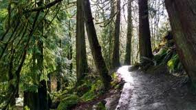

Arroyo Park was the first trail I had taken in the area when I moved to Bellingham about nine years ago. Originally from Boise, Idaho and Oakland, California the views of the lush and dense forest were other worldly to me. This hike provides a very laid back experince for a hiker and the ability to access to beauty the PNW truly has to offer us. From my experince this is a fairly quiet trail and is more so relaxing than challenging.